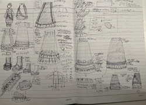
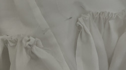
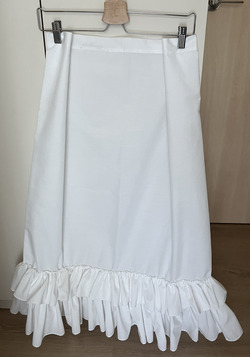
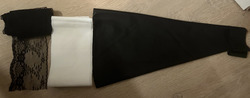
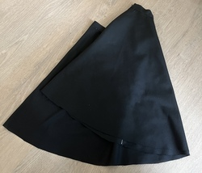
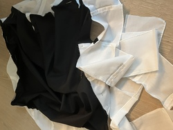

: Prom Skirts
My prom was coming up in November and I decided 'Hey, I want to be extra and sew part of my outfit myself.' This would be the second time I've made clothes for myself, the first being my inaccurate Közi cosplay. However, this time I wanted to make something i would actually wear regularly. Keep in mind that I don't have a sewing machine so everything is handsewn.
This was the conception of my prom outfit back in June. I was kind of obsessed with piano motifs at the time. What I originally wanted for the skirts was one mainly white skirt with an elastic waistband and a black half circle skirt with zipper closure to layer on top. Although the original plan had piano patterned ruffles on both skirts, I decided it was too much and only had it on the black skirt in the end. The white skirt was planned to have an embroidered music themed design despte me never having embroidered before.
White skirt
I started off with a big rectangle of white fabric I had leftover from a previous project and sewed a seam to make it a tube, finishing it with felled seam. I used invisible hem (I believe there is another name for this but I don't know it) to sew the casing for the elastic on the top and, of course, hem the bottom. For the ruffles, I had one longer and wider one as the lower tier and a short and narrower one as the higher tier. They were about 100cm different in length so that the ruffles had a different amount of fullness to them. After sewing seams to make the long ruffles, I hemmed them with a rolled hem. I may have gotten progressively got lazier and was more sloppy as I went but I got faster, I guess. After hemming, I gathered the strip before pinning and basting it to the skirt while it was suspended on a hanger. I just used back stitch all around to attach the ruffles.
Unfortunately, on the lower tier, I made a big mistake and knotted the gathering threads too short so it didn't fully cover the skirt. I ended up just sewing the ends of the ruffles together anyway. The small amount of bunching wont be very noticeable under the tier above, I hope. I made sure not to knot the gathering thread too short for the second tier.
The two tiers all done.

I sketched out the design I was going to embroider onto the skirt. The score was for the song Gekka no Yasoukyoku by Malice Mizer because this song has sentimental value to me. However, after I had already embroidered the 5 lines, I had major second thoughts about the embroidery. I think it would make the skirt less versatile. I removed the embroidery and washed the skirt to get the pencil markings out.

This is the finished skirt after I had sewn in the elastic band. The pencil marks are still slightly visible but i hope they will fade with time.
Black skirt
I had bought the fabric ages ago and I'm not sure what I was doing when I originally cut it because I had two possible squares of fabric to work with and both were only about 53.5cm in length for the half circle skirt, even though I wanted the black part of the skirt to be 55cm. Including the circle i cut out for the waist, the length of my square should have been at least 70+cm. I worked with what I had and ended up with a skirt much shorter than I intended when I cut out the circle.
This is how the skirt may look like with the black, then the white strip for the piano tile pleats, and black lace on the bottom. Funny story about the white strip: I think I had cut the ruffles for the white skirt much earlier but I never realised until after I had already made new ones. These ones were not as wide as I wanted them in the end so maybe it was for the better. I'm repurposing the wider one to be the piano tile pleats of this skirt.
Here I have finished sewing the waistband and zipper onto the circle skirt. It was hell, I hate sewing on circles. I also messed up the zipper end so if I zip it up fully I could totally get stuck in it and have to perform a super pro gamer move to get out, but whatever (totally not speaking from experience).
I was sewing on the piano tile pleats onto the bottom and I may have made the strip too long so i have a bunch of extra wasted. Maybe I shouldve made each white tile 1cm wide like I had originally intended, but I was scared I wouldn't have enough fabric so I changed it to 2cm.

Iriginally, I decided to use a longer lace for the trim but I ended up deciding on a shorter one because I think it looks nicer. I didn't have enough though so there is still a gap of lace left, I will go buy more. To be honest, I'm second guessing the addition of lace entirely but it's a bit too late for that.

This is the final skirt. Alright, in this picture I still hadn't finished up the lace but other than that, this is it. The hem falls about just above my knee which is shorter than I wanted but I guess it's fine. Originally, I was going to layer the two skirts but I've decided against it because I just dont think they go well layered. The silhouette just doesn't really work. I will just wear the white skirt to prom but this skirt is still really cute.
Edit : I had forgotten to mention that the blank keys on the piano pleats were made with black ribbon.